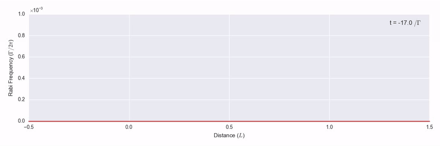
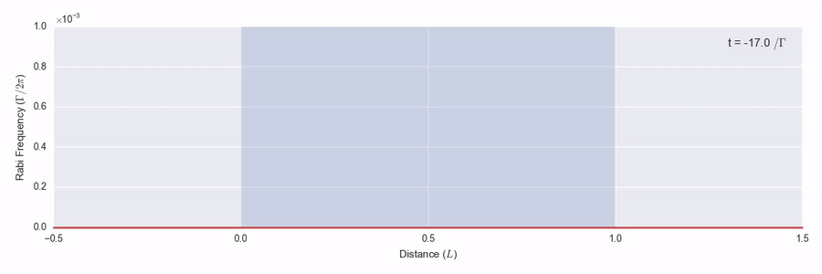
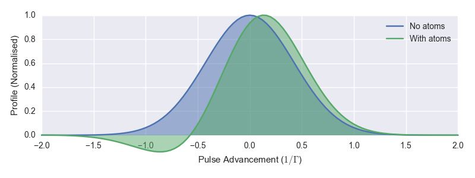
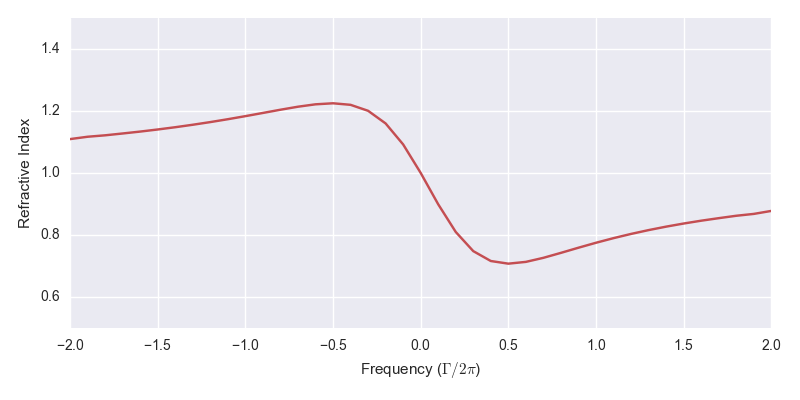
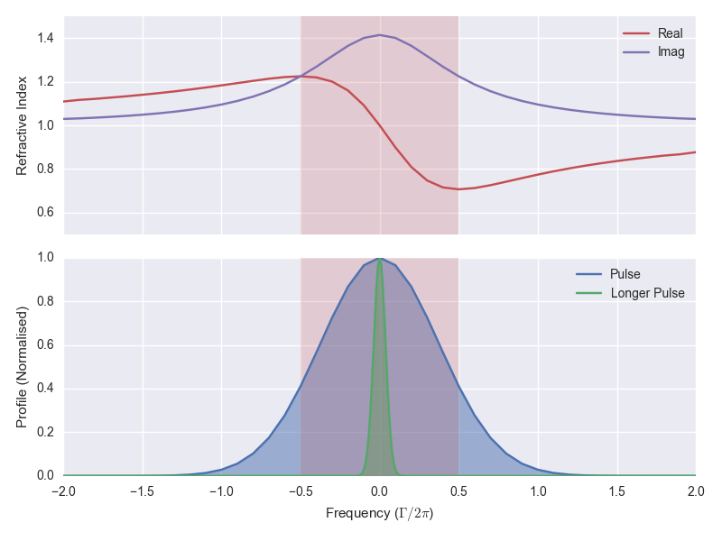
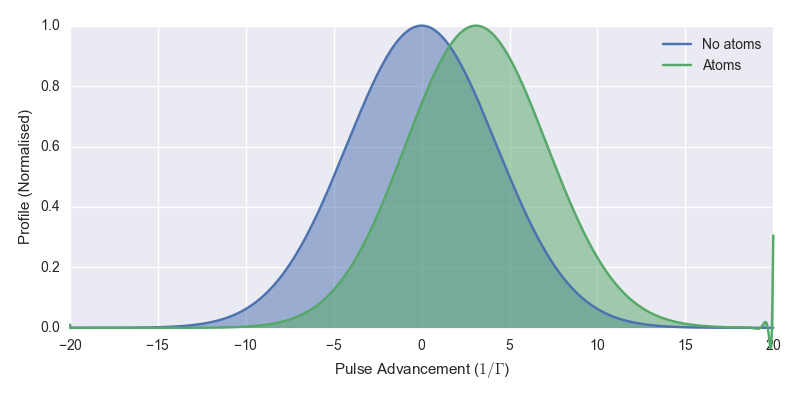
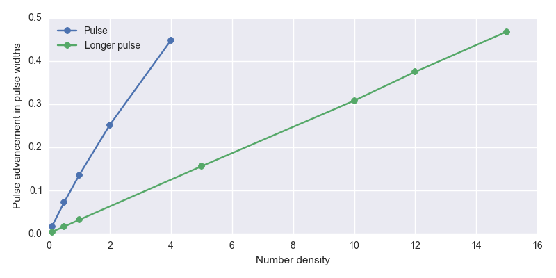
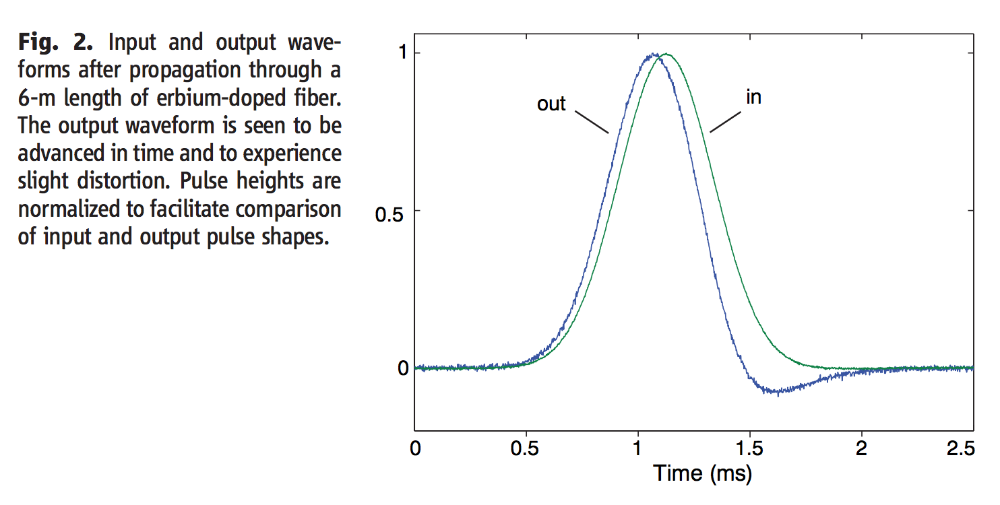

How to Make Light Go Faster Than Light
2018-04-02
A result you might recall from special relativity is that causality requires that no object may travel faster than the speed of light. In this post I’m going to show you how at least one thing can travel faster than the speed of light and that thing is… light.
Travelling Light
In figure 1 you see an example simulation1 of a short pulse of light of a single frequency travelling through space. We’ll label the space axis z and the time axis t.

It travels on unimpeded according to the homogenous Maxwell wave equation
\frac{\partial^2 E}{\partial z^2} - \frac{1}{c^2} \frac{\partial^2 E}{\partial z^2} = 0
at the speed of light in vacuo, c. Light is an electromagnetic wave and here E is the magnitude of the electric field.
In figure 2, we have the same pulse of light travelling over the same space, but this time it moves through a cloud of atoms indicated by the blue area between z = 0 and z = 1. Now the right hand side of the wave equation is nonzero.

The light is monochromatic and resonant with a level transition in the atoms. As the light pulse enters the atom cloud, the photons it’s made up of hit atoms and excite their electrons into the higher energy levels so that the energy of the light pulse is gradually absorbed and scattered. As it leaves the back of the atom cloud, the peak carries on with a constant but weaker peak intensity, about 50% of what it started with.
There’s something more interesting that happens in the simulation though. The speed of light c in this system is marked by the green line moving along with the pulse. That’s the speed that the peak of the pulse moved in figure 1. If you look closely at the pulse as it reaches the end of the atom cloud, you’ll see something odd. The peak of the pulse travelling through the atoms is ahead of the pulse that went through vacuum. It’s light that has arrived faster than light.
The difference is hard to pick out I admit, so to make it clearer in figure 3 we have the photo finish at the end of the atom cloud.

The blue pulse is the one from figure 1 and the green pulse is the one from figure 2. I’ve coloured them different to distinguish them here, but don’t take that to mean anything different about the light – it’s the same monochromatic pulse going in. You can see that here at the end of the medium, the centre of the pulse travelling through the atoms has advanced ahead of the vacuum pulse by about 10% of the initial pulse width.2
How do we square this with the causality requirement that nothing travels faster than light? Can this simulation be physical?
Phase Velocity and Group Velocity
To understand how this faster-than-light or superluminal propagation works, we’ll start with the concept of phase velocity. Take a monochromatic beam of light incident on some atoms. The light will induce dipoles on these atoms causing them to radiate a secondary wave at the same frequency. That it’s the same frequency is important here. The resultant superposition of the incoming and secondary waves then has the same frequency but a different phase. If this resultant wave lags the incoming wave an observer downstream has to wait longer to see the peaks of the resultant wave go by. The wave will appear to have slowed. This is what we mean by phase velocity, v_p. The outgoing phase velocity depends on the incoming frequency, which is how a raindrop is able to split the colours of sunlight in a rainbow. We call that dispersion.
We relate the phase velocity to the speed of light in a vacuum by v_p = \frac{c}{n} where n is the refractive index of the material (the atoms in our case) and is a function of the frequency \omega. In figure 4 we see the refractive index for the atoms in the simulation above around the resonance transition.

The effect on the light as it moves through these atoms depends on its frequency relative to the resonance. To the left we’re driving the atoms below their resonance frequency, n > 1 and the resultant wave lags the incoming wave. To the right we’re driving the atoms above their resonance frequency, n < 1 and the resultant wave leads the incoming wave. This is all classical physics as we’re driving the atoms with a weak field so each atom can be modelled well as a driven, damped harmonic oscillator.
Now the envelope of the narrow pulse of light on resonance is equivalent to a superposition of waves across a wide range of frequencies,3 each of which as we’ve seen will have a different v_p according to where they are on the refractive index function in figure 4. The peak of the pulse is the position where the component frequencies are all in phase and this moves at a speed we call group velocity, v_g. Similarly we define a group index n_g such that v_g = \frac{c}{n_g}. We can derive that this group index is given by
v_g = n + \omega \frac{\mathrm{d}n}{\mathrm{d}\omega}.
You can see that the second term is proportional to the gradient of the refractive index profile. If this is negative and large it is possible for v_g > c. For our system we see in figure 4 that the gradient is negative in a narrow region around the resonance. We call this a region of anomalous dispersion.
How fast can we make the group velocity? The first thing we might think of to make it faster is to increase the atom number density to allow more induced dipoles to disperse the phase velocities. This does work, but there are a couple of drawbacks. First, the region of anomalous dispersion around resonance is also the region in which the atoms absorb the most energy from the field so the peak is significantly reduced. That’s OK to a point though, if we care just about the arrival time of the pulse and not its height. Second, and more significant, is the effect dispersion has on the shape of the pulse. See in figure 3 how the pulse developed a negative tail? Eventually the pulse breaks up and it no longer makes sense to talk about a single pulse. There’s a way to fix this though.
In the top part of figure 5 we see again the refractive index from figure 4. The red area indicates the region of anomalous dispersion, where the gradient \frac{\mathrm{d}n}{\mathrm{d}\omega} is negative. In fact, when I’ve been talking about the refractive index so far I’ve actually meant the real part of the refractive index, which is a complex quantity. The imaginary part is related to the absorption of light at a given frequency and is shown in purple. It’s a Lorentzian lineshape just like we see in absorption spectra.

In the bottom part of figure 5 we see in blue the input pulse from figure 2, Fourier transformed into the frequency domain. You can see what I mean when I said above that the pulse envelope is equivalent to a superposition across a wide range of frequencies. And in this plot we see why we are able to get superluminal propagation in this pulse – it covers the region of anomalous dispersion.
Not all of the pulse is in the anomalous dispersion region however.4 The low and high frequency wings of the pulse head out into the regions where \frac{\mathrm{d}n}{\mathrm{d}\omega} is positive. That means that these components of the field are going to move slower and the pulse shape is going to be distorted. This is the cause of the negative tail of the pulse in figure 2. If we could get all of the pulse into the anomalous dispersion region, we could reduce this dispersion of the pulse. And we can!
To get a narrower pulse in the frequency domain, we need a wider pulse in the time domain. The green pulse in the bottom part of figure 5 is one we’ve made 10× longer in the time domain and we see in the frequency domain it is all tucked in a narrow region around resonance. Moreover, the gradient of the refractive index is nearly constant for all components, so we should see less dispersion.
In figure 6 we see the photo finish like in figure 3 but for the wider pulse, with and without the atom cloud.

This time we see that the pulse holds its shape and at the same time we’re able to get pulse advancement of about 30% of the pulse width. This is light travelling significantly faster than c. Figure 7 shows the pulse advancement of a series of simulations with varying pulse width and number density.

The blue dots indicate simulations done with the narrower pulses and the green dots indicate simulations done with the wider pulses. The relationship between number density and pulse advancement is close to linear. The highest pulse advancement I reached in these simulations is nearly 50% of the pulse width. The limiting factor is the increasing absorption such that I end up with a pulse so small I start hitting numerical limits in the simulation.
Experimental Observation
All I’ve shown you so far is mathematics and the results of numerical simulations. The possibility of faster-than-light travel is a big claim. You might well be asking if it has ever been achieved in experiment. It has! As far back as this Physical Review Letters paper by S. Chu et al.5 in 1982. In that case they achieved pulse advancement but found large absorption, for reasons explained above. Later, the ability to avoid that absorption was realised in this Nature paper by L. J. Wang, A. Kuzmich & A. Dogariu in 2000. It’s worth quoting a bit of the abstract:
Einstein’s theory of special relativity and the principle of causality imply that the speed of any moving object cannot exceed that of light in a vacuum (c). Nevertheless, there exist various proposals for observing faster-than-c propagation of light pulses, using anomalous dispersion near an absorption line, nonlinear and linear gain lines, or tunnelling barriers. However, in all previous experimental demonstrations, the light pulses experienced either very large absorption or severe reshaping, resulting in controversies over the interpretation. Here we use gain-assisted linear anomalous dispersion to demonstrate superluminal light propagation in atomic caesium gas. The group velocity of a laser pulse in this region exceeds c and can even become negative, while the shape of the pulse is preserved.
I particularly like this figure from a 2006 paper in Science by Gehring et al., because you can see it looks like my figure 3 above with pulse advancement and a dispersed negative tail (their time axis is the other way around so flip the image in your head).

And while I was working on my PhD in Durham, my fellow student James Keaveney and colleagues in an experiment using a nano-cell achieved the largest negative group index ever measured.
Information Velocity
At this point, you might be wondering why the authors above published papers on superluminal propagation rather than using it to make themselves incredibly rich. Maybe you’ve read Flash Boys, the best-selling book on high-frequency trading by Michael Lewis, and recall the story of the person who dug a straight-line tunnel for optical fibre through mountains between the exchanges of New York to Chicago to reduce the transmission time from 17 to 13 milliseconds. Traders handed over millions to access this small increase in speed. If I’m giving you instructions on how to make light travel faster than the speed of light, can’t I use that to beat the traders? You probably already guessed the answer is no.
In the case of fast light, the group velocity v_g is not the same as the velocity of information carried by the pulse. The reason is subtle, but remember that our wave envelope is made up of individual components travelling at a speed c, even if their phase is shifted. The peak of the pulse is just where we see the phases of those components line up, and there is no causal link between the peak of the output pulse and the peak of the input pulse. We can’t send information faster than c, even in superluminal propagation. Which is probably reassuring. I recommend this PRL paper by Kuzmich et al. (arXiv) if you want to read more about information velocity and causality in fast light.
MaxwellBloch
The main reason I wrote this post was to demonstrate one of the things you can easily simulate with MaxwellBloch, a Python package I’ve been developing from my research on nonlinear pulse propagation.
I have a bunch of example MaxwellBloch notebooks in this Github repo. For example, the system in figure 2 is in this notebook. Have a play with the package, adjust some parameters and see what you can simulate. The code behind each of the plots in this post is reproducible in this notebook, apart from figure 7 which is in this notebook.
Corrections and suggestions welcome via {% include mail_ogden_eu.html %} or Twitter.
References
Thomas P. Ogden (2016), Resonant Pulse Propagation in Dense Atomic Vapours. PhD Thesis.
Kuzmich et al. (2001), Signal velocity, causality, and quantum noise in superluminal light pulse propagation. Physical Review Letters, 86(18) (arXiv).
Stenner et al. (2003), The speed of information in a “fast-light” optical medium. Nature, 695–698.
Keaveney et al. (2012), Maximal Refraction and Superluminal Propagation in a Gaseous Nanolayer. Physical Review Letters 109(23) (arXiv).
Gehring et al. (2006) Observation of Backward Pulse Propagation Through a Medium with a Negative Group Velocity. Science 312(5775)
Hecht (2015) Optics. Pearson Education.
Greg Egan (2000) Subluminal.
Footnotes
All of the simulations in this post have been produced with the MaxwellBloch package.↩︎
To be precise, when I talk about pulse widths in this post I mean the full width at half maximum.↩︎
If this paragraph is not clear to you I strongly recommend checking out this demo by Greg Egan. It brilliantly shows how a pulse envelope can be made up of multiple monochromatic light waves, and derives the group velocity so I don’t have to do that here.↩︎
The pulse we put in was a Gaussian and the Fourier transform of a Gaussian is a Gaussian.↩︎
American readers might recognise the name Steven Chu as he later went on to be Secretary of Energy under Obama and the first member of the U.S. Cabinet to have won a Nobel Prize.↩︎